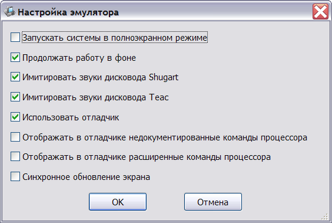

Для настройки режима эмуляции всех доступных систем используется окно настроек, вызываемое нажатием кнопки "Настройки" в главном окне эмулятора.

Описание настроек:
"Запускать системы в полноэкранном режиме" - переключение в полноэкранный режим при старте системы.
"Продолжать работу в фоне" - не приостанавливать выполнение системы при переключении пользователя на другое окно (например, окно отладчика).
"Имитировать звуки дисковода Shugart" - использовать встроенные звуковые файлы для имитации звука перемещения головок дисковода Shugart (140K - диски).
"Имитировать звуки дисковода Teac" - использовать встроенные звуковые файлы для имитации звука перемещения головок дисковода Teac (840K - диски).
"Использовать отладчик" - добавить в контекстно меню систем возможность вызова встроенного отладчика.
"Отображать в отладчике недокументированные команды процессора" - при эмуляции процессора 6502, в листинге памяти командой "L", отображать недокументированные команды вместо знаков вопроса.
"Отображать в отладчике новые команды процессора" - при эмуляции процессора 650C2, в листинге памяти командой "L", отображать новые команды вместо знаков вопроса.
"Синхронное обновление экрана" - обновлять окно эмуляции в соответствии с каждой командой записи в видео-память. При отключенном режиме используется алгоритм, уменьшающий количество обновлений экрана, что в ряде случаев может привести к нарушению плавности изображения.
См. также: Работа в эмуляторе, Клавиатурные сокращения, Главное меню